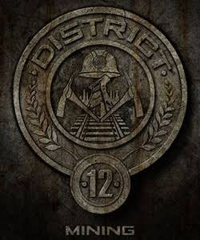
O Distrito 12 é o principal responsável pela produção de luxo e joias para a Capital.
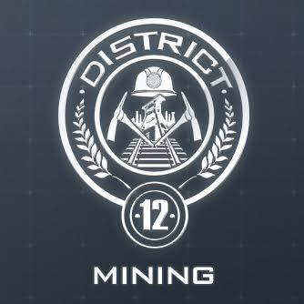
❌ MITO! O Distrito 12 vive da mineração de carvão ⛏️. O luxo vem do Distrito 1!
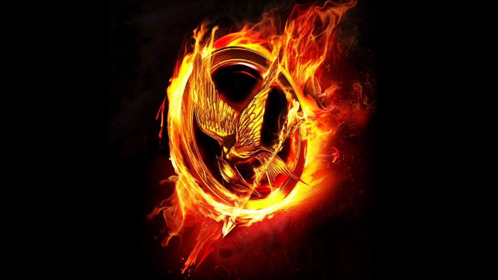
O broche de Tordo que a Katniss usa foi dado originalmente pela sua irmã, Prim, para protegê-la.
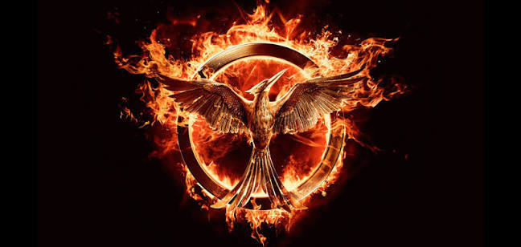
❌ MITO! No filme ela dá para a Prim, mas nos livros quem dá é a Madge, filha do prefeito 🔥.
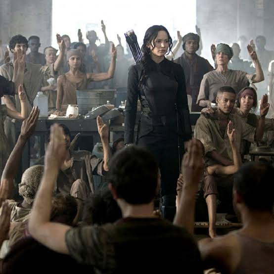
O Gesto com os três dedos erguidos significa admiração, respeito e despedida de alguém querido.
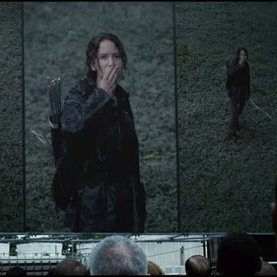
✅ VERDADE! Uma tradição do Distrito 12 que virou o maior símbolo da rebelião ✊.
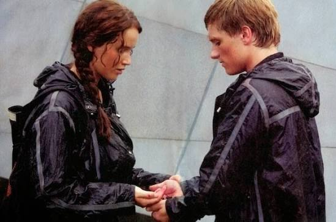
Katniss e Peeta venceram a sua primeira edição dos Jogos ameaçando comer Amoras Cadeado juntos.
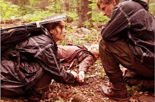
✅ VERDADE! A Capital cedeu à pressão para não ficar sem nenhum vencedor 🍓.
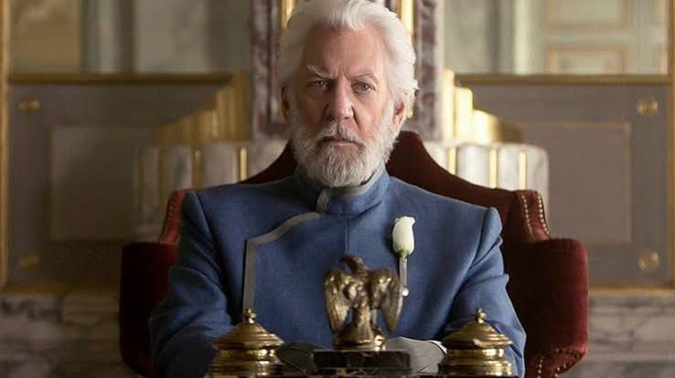
O Presidente Snow usa sempre uma rosa branca para disfarçar o cheiro de sangue da sua boca.
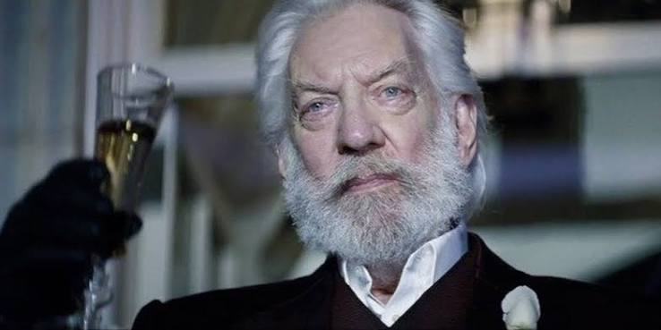
✅ VERDADE! Efeito dos venenos que ele tomava para não levantar suspeitas 🌹.
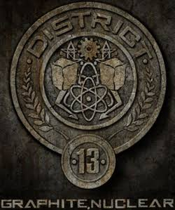
O Distrito 13 foi completamente apagado do mapa e nenhum habitante sobreviveu após a primeira guerra.
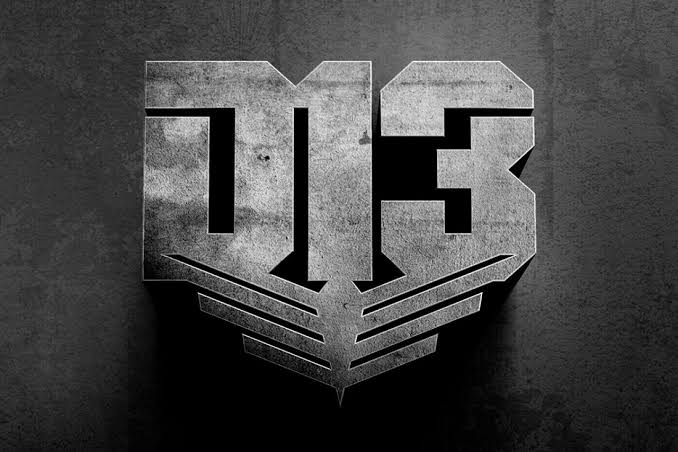
❌ MITO! Eles se esconderam no subsolo e criaram uma sociedade secreta nuclear 🚀.